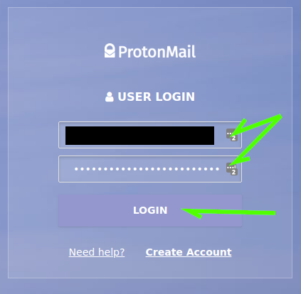
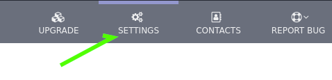
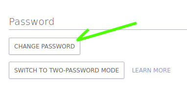
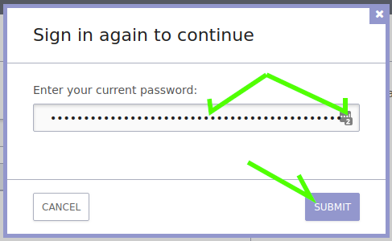
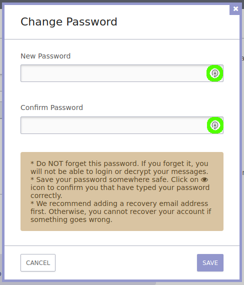
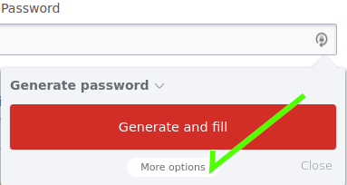
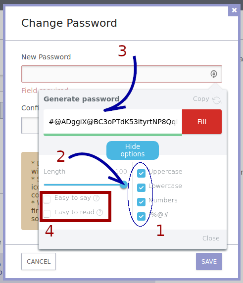
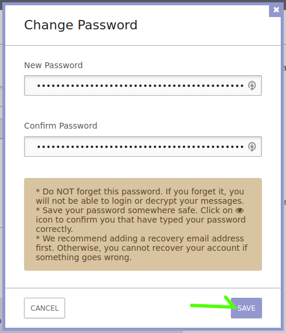
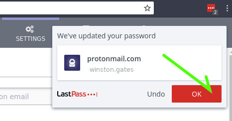

Let's set a yet more secure passphrase for our ProtoMail account.
Head over to ProtonMail and login, LastPass should have your credentials for this, and should log you in. If LastPass does not automatically fill in your username and passphrase, click either of the icons in the username and passphrase box and select you account from the list (which should only have one.) Then click the LOGIN button.

Having logged in with LastPass, let's change the password on our burner email to something which cannot be brute forced before the heat death of the internet.
Click on the "Settings" gears at the top right of the page that.

Once on the settings page, look low and left for a section of your settings labeled "Password" and click on the "CHANGE PASSWORD" button.

ProtonMail wants to be sure that only you change your passprhase, so prompts for you to input your passphrase, again LastPass should do this for you. Hit "SUBMIT."

Note the arrow spinning around a Padlock icon to the right of the text fields for your new passphrase? Click either one (preferably the top, sometimes when you click the bottom one it fails to fill in both.)

This opens the "Generate password" dialogue from LastPass. Let's click on the "More options" button and have a look at what other options we have here.

Alright, so here's the window that gives us a bunch of options for how LastPass is going to generate this passphrase. I'll do some explaining.

When you've got a passphrase you like, click the "Fill" button.
You should now see both the "New Password" and "Confirm Password" fields filled in. Hit the "SAVE" button on the bottom right.

Almost as soon as that button goes down, LastPass should pop a notification letting you know that it saw you reset the passphrase, if you hit the "OK" button on this notification your old passphrase will go away, and LastPass will use the new passphrase to log you into ProtonMail.

Congratulations! You're on the road to becoming the hardest target, the fruit at the top of the tree, the Fort Knox of data about you!